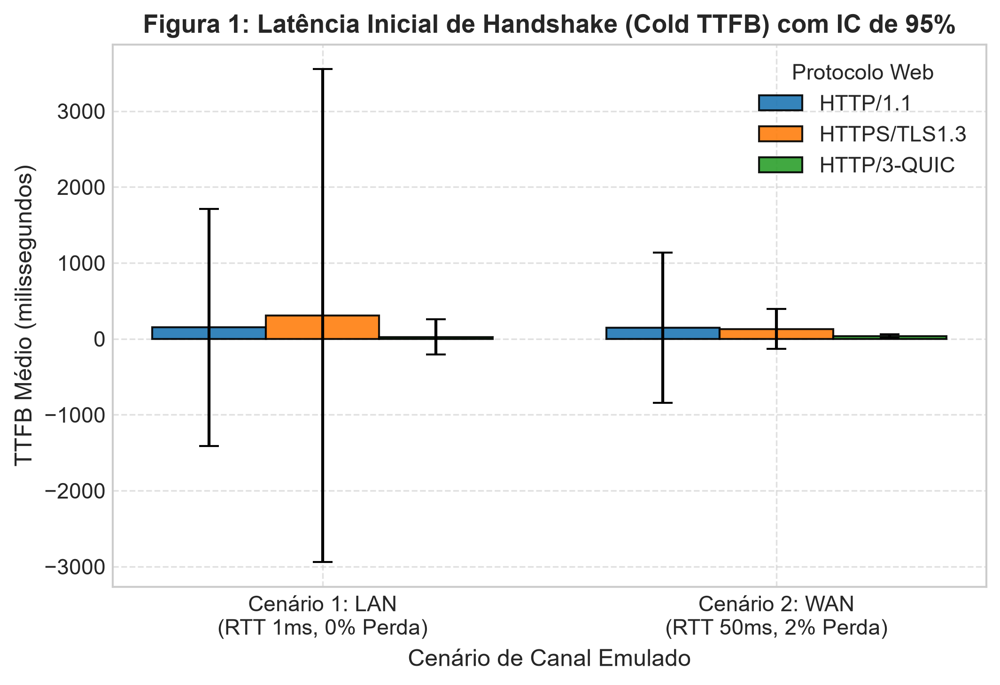
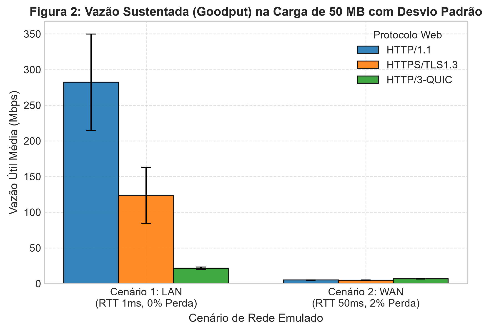
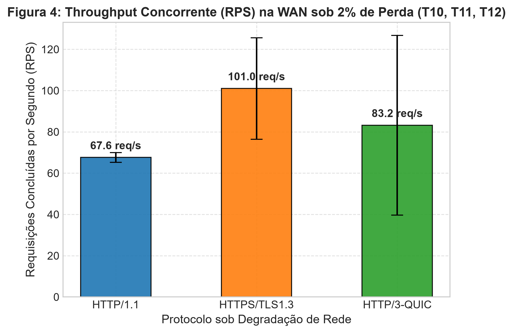
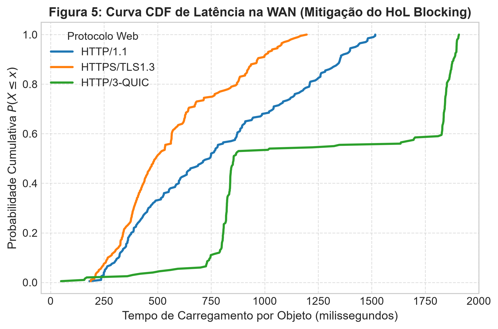

HTTP/1.1 vs HTTPS/TLS 1.3 vs HTTP/3-QUIC sob Degradação Controlada de Canal
Instituição: Universidade Federal do Piauí (UFPI) — Campus Senador Helvídio Nunes de Barros (CSHNB)
Disciplina: Redes de Computadores II (2026-2)
Aluno: João Marcos Sousa Rufino Leal (jsousarufinoleal@ufpi.edu.br)
Tecnologias: Docker, Linux Traffic Control (tc netem), Python (httpx + aioquic)
net_bench)172.20.0.0/16.cap_add: [NET_ADMIN] para evitar o erro RTNETLINK: Operation not permitted.tc netemO atraso unidirecional na interface eth0 equivale a RTT / 2:
/data/static.h2).time.perf_counter() garantindo precisão de microssegundos.Cache-Control: no-store, no-cache em 100% das chamadas.await client.aclose() explícito antes de cada requisição para isolar a latência pura de handshake (sem connection pooling).| ID | Perfil de Carga | Protocolo | Cenário | Foco Analítico Principal |
|---|---|---|---|---|
| T01 | Carga A (50 MB) | HTTP/1.1 | LAN (1ms, 0%) | Vazão máxima TCP em canal ideal |
| T02 | Carga A (50 MB) | HTTPS / TLS 1.3 | LAN (1ms, 0%) | Sobrecarga de cifragem simétrica TLS 1.3 |
| T03 | Carga A (50 MB) | HTTP/3 (QUIC) | LAN (1ms, 0%) | Eficiência do QUIC em user-space sem perdas |
| T04 | Carga A (50 MB) | HTTP/1.1 | WAN (50ms, 2%) | Colapso da janela do TCP CUBIC sob descarte |
| T05 | Carga A (50 MB) | HTTPS / TLS 1.3 | WAN (50ms, 2%) | Degradação cumulativa TCP CUBIC + TLS |
| T06 | Carga A (50 MB) | HTTP/3 (QUIC) | WAN (50ms, 2%) | Controle de congestionamento do QUIC sob perda |
| T07 | Carga B (100x10KB) | HTTP/1.1 | LAN (1ms, 0%) | Overhead de conexões paralelas / HoL de aplicação |
| T08 | Carga B (100x10KB) | HTTPS / TLS 1.3 | LAN (1ms, 0%) | Eficiência da multiplexação HTTP/2 em baixa latência |
| T09 | Carga B (100x10KB) | HTTP/3 (QUIC) | LAN (1ms, 0%) | Desempenho de streams QUIC na rede ideal |
| T10 | Carga B (100x10KB) | HTTP/1.1 | WAN (50ms, 2%) | Severidade do HoL na Camada de Aplicação |
| T11 | Carga B (100x10KB) | HTTPS / TLS 1.3 | WAN (50ms, 2%) | Severidade do HoL na Camada de Transporte TCP |
| T12 | Carga B (100x10KB) | HTTP/3 (QUIC) | WAN (50ms, 2%) | Eliminação do HoL blocking via streams UDP |
Evidência clara do impacto de cada RTT no estabelecimento de sessão:

Fundamentação Teórica: Sob 2% de perda estocástica, ocorrem ~700 descartes. O intervalo entre perdas (Δt ≈ 70ms) é muito menor que o tempo K para restaurar a janela. O TCP CUBIC sofre recuos multiplicativos repetidos, mantendo a janela CWND permanentemente asfixiada.



• TANENBAUM, A. S.; WETHERALL, D. J. Redes de Computadores. Pearson (Seção 6.5.11, Seção 6.6.1, Seção 6.6.2).
• RFC 793 (TCP), RFC 7540 (HTTP/2), RFC 8446 (TLS 1.3), RFC 9000 (QUIC), RFC 9114 (HTTP/3).
• CARDWELL, N. et al. BBR: Congestion-Based Congestion Control. ACM Queue, 2017.